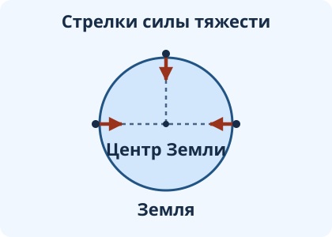

Явление тяготения. Сила тяжести
Отпущенный мяч падает. Подброшенный мяч ещё некоторое время летит вверх, затем останавливается на мгновение и начинает падать. Всё это время Земля притягивает мяч. Разберёмся, как определить направление этой силы и почему она действует даже на неподвижные предметы.
Почему тела притягиваются
Земля притягивает мяч, и мяч тоже притягивает Землю. Изменение движения Земли из-за мяча практически незаметно, потому что её масса намного больше. Притяжение между обычными предметами, например двумя лежащими рядом яблоками, тоже есть, но оно слишком слабое, чтобы заметить его без специальных приборов.
Тяготение действует и в космосе. Например, Земля притягивает Луну и всё время меняет направление её движения. Луна при этом движется вокруг Земли.
Куда направлена сила тяжести
На схеме силу тяжести обозначают стрелкой \(\vec{F}_{\text{тяж}}\). Для небольшого тела её обычно проводят от точки, которой изображают само тело. Величину силы тяжести, как и других сил, измеряют в ньютонах (Н).

На рисунке местное «вниз» для каждого тела направлено к центру Земли. Поэтому для людей в разных частях планеты вертикальные направления различаются.
Как сила тяжести влияет на движение
Если мяч отпустить, он начнёт двигаться вниз. Если мяч подбросить вертикально, при подъёме его скорость уменьшается, а при падении увеличивается. В обоих случаях сила тяжести направлена вниз. В самой высокой точке скорость вертикально подброшенного мяча на мгновение равна нулю, но сила тяжести продолжает действовать.
При падении в воздухе на тело может заметно действовать и сопротивление воздуха. Разверните лист бумаги и скомкайте другой такой же лист. У них одинаковая масса, но расправленный лист обычно падает дольше. Разницу объясняет сопротивление воздуха, которое сильнее мешает движению расправленного листа.
Книга на столе
Почему книга остаётся на месте
Земля тянет книгу вниз. Стол действует на книгу вверх. Эти силы приложены к одной книге и, пока книга неподвижна на горизонтальном столе, уравновешивают друг друга. Если убрать стол, поддерживающая сила исчезнет и книга начнёт падать.
Мяч ещё летит вверх
Куда нарисовать стрелку
Мяч выбросили вертикально вверх, и он уже оторвался от руки. На рисунке мяч можно обозначить точкой. От этой точки проводим стрелку силы тяжести вниз, хотя мяч пока движется вверх. Сила тяжести при подъёме уменьшает скорость мяча.
Коротко о главном
- Тяготение — взаимное притяжение тел. Оно действует и без соприкосновения.
- Вблизи Земли сила тяжести направлена вертикально вниз, приблизительно к её центру.
- Сила тяжести действует на тело при падении, при подъёме и в покое.
Проверь себя
Вопросы
1. Какие два тела взаимодействуют, когда яблоко падает с ветки? В чём проявляется взаимность их притяжения? 2. Что покажет груз на нити, когда перестанет раскачиваться? 3. Что происходит со скоростью вертикально подброшенного мяча в самой высокой точке? Куда в этот момент направлена сила тяжести?
Задания
- Изобразите три положения мяча — при вертикальном подъёме, в самой высокой точке и при падении. В каждом положении нарисуйте стрелку силы тяжести. Там, где мяч движется, отдельной стрелкой покажите направление его скорости.
- В двух точках земной поверхности, расположенных на противоположных сторонах Земли, находятся неподвижные камни. Нарисуйте окружность, отметьте камни и изобразите силу тяжести для каждого из них. Объясните, почему обе стрелки показывают местное направление вниз.
- Сравните падение двух одинаковых листов бумаги — расправленного и скомканного. Отпустите их одновременно с одной высоты, не подталкивая. Опишите результат и объясните, почему разное время падения не означает, что Земля сильнее притягивает один из листов.